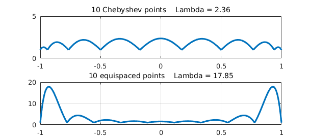
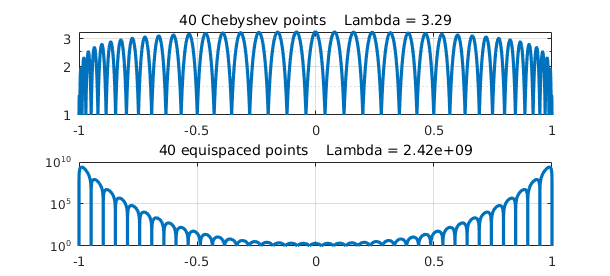
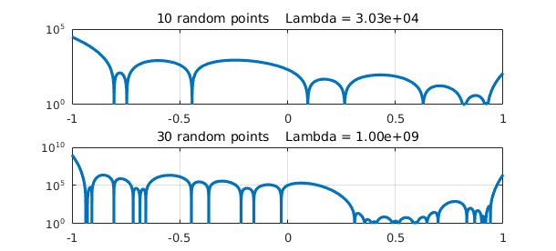

Lebesgue constants are a standard notion of approximation theory. Suppose we have $n+1$ points $x_j$ in an interval $[a,b]$ with associated data values $f_j$ with $|f_j| \leq 1$, and we interpolate this data by a polynomial $p(x)$ of degree $n$. What's the maximum possible value of $|p(x)|$ at each point $x$? This function of $x$ is called the Lebesgue function for the given grid. The Lebesgue constant is the the maximum of $L(x)$ over the interval. Equivalently, it is the $\infty$-norm of the linear operator mapping data to interpolant on the given grid and interval.
Chebfun has a command lebesgue for working with these notions. For example, here are the Lebesgue functions and constants for 10 Chebyshev points and 10 equispaced points in $[-1,1]$:
FS = 'fontsize'; LW = 'linewidth';
[Lfun,Lambda] = lebesgue(chebpts(10));
subplot(2,1,1), plot(Lfun,LW,1.6), grid on
title(sprintf('10 Chebyshev points Lambda = %3.2f',Lambda),FS,14)
[Lfun,Lambda] = lebesgue(linspace(-1,1,10));
subplot(2,1,2), plot(Lfun,LW,1.6), grid on
title(sprintf('10 equispaced points Lambda = %4.2f',Lambda),FS,14)

If we increase 10 to 40, we need to switch to a semilogy plot to see the results:
[Lfun,Lambda] = lebesgue(chebpts(40));
subplot(2,1,1), semilogy(Lfun,LW,1.6), grid on
title(sprintf('40 Chebyshev points Lambda = %3.2f',Lambda),FS,14)
[Lfun,Lambda] = lebesgue(linspace(-1,1,40));
subplot(2,1,2), semilogy(Lfun,LW,1.6), grid on
title(sprintf('40 equispaced points Lambda = %5.2e',Lambda),FS,14)

This picture confirms the well-known fact (the Runge phenomenon) that polynomial interpolation in equispaced points is terribly ill-conditioned. In fact it is known that as $n$ increases to infinity, the Lebesgue constant for $n$ Chebyshev points is asymptotic to $(2/\pi)\log(n)$ whereas for $n$ equispaced points it is $2^n/(e n \log(n))$.
Here are results for 10 and 30 random points in $[-1,1]$. The reason for shrinking the number from 40 to 30 is that for larger values than this, difficulties arise caused by rounding errors since the Lebesgue function is bigger than the inverse of machine epsilon.
rng('default'), rng(0)
[Lfun,Lambda] = lebesgue(2*rand(10,1)-1);
subplot(2,1,1), semilogy(Lfun,LW,1.6), grid on
title(sprintf('10 random points Lambda = %5.2e',Lambda),FS,14)
[Lfun,Lambda] = lebesgue(2*rand(30,1)-1);
subplot(2,1,2), semilogy(Lfun,LW,1.6), grid on
title(sprintf('30 random points Lambda = %5.2e',Lambda),FS,14)

References
- L. N. Trefethen, Approximation Theory and Approximation Practice, SIAM, 2013.